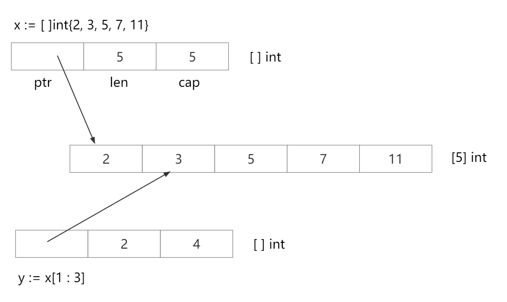
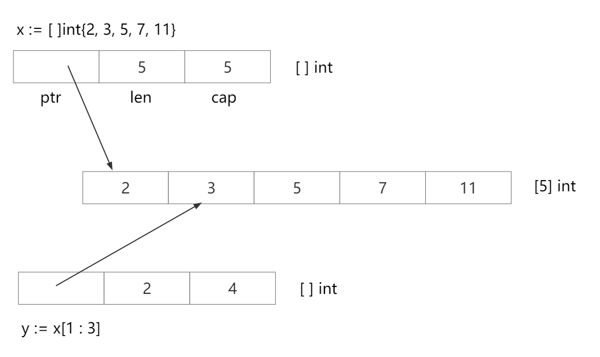

切片SLICE
Table of Contents
什么是切片
需要说明， slice 并不是数组或数组指针，它通过内部指针和相关属性引用数组片段，以实现变长方案。
- 切片是数组的一个引用，因此切片是引用类型。但自身是结构体，值拷贝传递。
- 切片的长度可以改变，因此，切片是一个可变的数组。
- 切片遍历方式和数组一样，可以用
len()求长度。表示可用元素数量，读写操作不能超过该限制。 cap可以求出slice最大扩张容量，不能超出数组限制。0 <= len(slice) <= len(array)，其中array是slice引用的数组。- 切片的定义：
var 变量名 []类型，比如var str []string、var arr []int。 - 如果
slice == nil，那么len、cap结果都等于 0。
创建切片的各种方式
package main import "fmt" func main() { // 1. 声明切片 var s1 []int if s1 == nil { fmt.Println("s1 == nil") } else { fmt.Println("s1 != nil") } // 2. := s2 := []int{} if s2 == nil { fmt.Println("s2 == nil") } else { fmt.Println("s2 != nil") } s3 := []int{1, 2, 3} fmt.Println(s3) // 3. make() var s4 []int = make([]int, 0) fmt.Println(s1, s2, s4) // 4. 初始化赋值 var s5 []int = make([]int, 0, 0) fmt.Println(s5) // 5. 从数组切片 arr := [5]int{1, 2, 3, 4, 5} var s6 []int s6 = arr[1:4] fmt.Println(s6) }
s1 == nil s2 != nil [1 2 3] [] [] [] [] [2 3 4]
切片初始化
全局：
var arr = [...]int{0, 1, 2, 3, 4, 5, 6, 7, 8, 9} var slice0 []int = arr[start:end] var slice1 []int = arr[:end] var slice2 []int = arr[start:] var slice3 []int = arr[:] var slice4 = arr[:len(arr) - 1] // 去掉切片的最后一个元素
局部：
arr2 := [...]int{9, 8, 7, 6, 5, 4, 3, 2, 1, 0} slice5 := arr[start:end] slice6 := arr[:end] slice7 := arr[start:] slice8 := arr[:] slice9 := arr[:len(arr) - 1] // 去掉切片的最后一个元素
| 操作 | 含义 |
|---|---|
| s[n] | 切片 s 中索引位置为 n 的项 |
| s[:] | 从切片 s 的索引位置 0 到 len(s) - 1 处所获得的切片 |
| s[low:] | 从切片 s 的索引位置 low 到 len(s) - 1 处所获得的切片 |
| s[:high] | 从切片 s 的索引位置 0 到 high 处所获得的切片 |
| s[low:high] | 从切片 s 的索引位置 low 到 high 处所获得的切片 |
| s[low:high:max] | 从切片 s 的索引位置 low 到 high 处所获得的切片，len = high - low，cap = max - low |
| len(s) | 切片 s 的长度，len(s) <= cap(s) |
| cap(s) | 切片 s 的容量，cap(s) >= len(s) |
package main import "fmt" var arr = [...]int{0, 1, 2, 3, 4, 5, 6, 7, 8, 9} var slice0 []int = arr[2:8] var slice1 []int = arr[0:6] // 可以简写为 var slice []int = arr[:end] var slice2 []int = arr[5:10] // 可以简写为 var slice[]int = arr[start:] var slice3 []int = arr[0:len(arr)] // var slice []int = arr[:] var slice4 = arr[:len(arr) - 1] // 去掉切片的最后一个元素 func main() { fmt.Printf("全局变量：arr %v\n", arr) fmt.Printf("全局变量：slice0 %v\n", slice0) fmt.Printf("全局变量：slice1 %v\n", slice1) fmt.Printf("全局变量：slice2 %v\n", slice2) fmt.Printf("全局变量：slice3 %v\n", slice3) fmt.Printf("全局变量：slice4 %v\n", slice4) fmt.Printf("-----------------------------------\n") arr := [...]int{9, 8, 7, 6, 5, 4, 3, 2, 1, 0} slice5 := arr[2:8] slice6 := arr[0:6] // 可以简写为 slice := arr[:end] slice7 := arr[5:10] // 可以简写为 slice := arr[start:] slice8 := arr[0:len(arr)] // slice := arr[:] slice9 := arr[:len(arr) - 1] // 去掉切片的最后一个元素 fmt.Printf("局部变量：arr %v\n", arr) fmt.Printf("局部变量：slice5 %v\n", slice5) fmt.Printf("局部变量：slice6 %v\n", slice6) fmt.Printf("局部变量：slice7 %v\n", slice7) fmt.Printf("局部变量：slice8 %v\n", slice8) fmt.Printf("局部变量：slice9 %v\n", slice9) }
输出结果：
全局变量：arr [0 1 2 3 4 5 6 7 8 9] 全局变量：slice0 [2 3 4 5 6 7] 全局变量：slice1 [0 1 2 3 4 5] 全局变量：slice2 [5 6 7 8 9] 全局变量：slice3 [0 1 2 3 4 5 6 7 8 9] 全局变量：slice4 [0 1 2 3 4 5 6 7 8] ----------------------------------- 局部变量：arr [9 8 7 6 5 4 3 2 1 0] 局部变量：slice5 [7 6 5 4 3 2] 局部变量：slice6 [9 8 7 6 5 4] 局部变量：slice7 [4 3 2 1 0] 局部变量：slice8 [9 8 7 6 5 4 3 2 1 0] 局部变量：slice9 [9 8 7 6 5 4 3 2 1]
通过 make 来创建切片
var slice []type = make([]type, len) slice := make([]type, len) slice := make([]type, len, cap)
package main import "fmt" var slice0 []int = make([]int, 10) var slice1 = make([]int, 10) var slice2 = make([]int, 10, 10) func main() { fmt.Printf("make全局slice0 ：%v\n", slice0) fmt.Printf("make全局slice1 ：%v\n", slice1) fmt.Printf("make全局slice2 ：%v\n", slice2) fmt.Println("--------------------------------------") slice3 := make([]int, 10) slice4 := make([]int, 10) slice5 := make([]int, 10, 10) fmt.Printf("make局部slice3 ：%v\n", slice3) fmt.Printf("make局部slice4 ：%v\n", slice4) fmt.Printf("make局部slice5 ：%v\n", slice5) }
make全局slice0 ：[0 0 0 0 0 0 0 0 0 0] make全局slice1 ：[0 0 0 0 0 0 0 0 0 0] make全局slice2 ：[0 0 0 0 0 0 0 0 0 0] -------------------------------------- make局部slice3 ：[0 0 0 0 0 0 0 0 0 0] make局部slice4 ：[0 0 0 0 0 0 0 0 0 0] make局部slice5 ：[0 0 0 0 0 0 0 0 0 0]
读写操作实际目标是底层数组，只需要注意索引号的差别。
package main import "fmt" func main() { data := [...]int{0, 1, 2, 3, 4, 5} s := data[2:4] s[0] += 100 s[1] += 200 fmt.Println(s) fmt.Println(data) } // [102 203] // [0 1 102 203 4 5]
可直接创建 slice 对象，自动分配底层数组。
package main import "fmt" func main() { s1 := []int{0, 1, 2, 3, 8: 100} // 通过初始化表达式构造，可使用索引号。 fmt.Println(s1, len(s1), cap(s1)) s2 := make([]int, 6, 8) // 使用 make 创建，指定 len 和 cap 值。 fmt.Println(s2, len(s2), cap(s2)) s3 := make([]int, 6) // 省略 cap，相当于 cap = len。 fmt.Println(s3, len(s3), cap(s3)) } // [0 1 2 3 0 0 0 0 100] 9 9 // [0 0 0 0 0 0] 6 8 // [0 0 0 0 0 0] 6 6
使用 make 动态创建slice，避免了数组必须用常量做长度的麻烦。还可用指针直接访问底层数组，退化成普通数组操作。
package main import "fmt" func main() { s := []int{0, 1, 2, 3} p := &s[2] // *int, 获取底层数组元素指针。 *p += 100 fmt.Println(s) } // [0 1 102 3]
至于 [][]T ，是指元素类型为 []T 。
package main import "fmt" func main() { data := [][]int{ []int{1, 2, 3}, []int{100, 200}, []int{11, 22, 33, 44}, } fmt.Println(data) } // [[1 2 3] [100 200] [11 22 33 44]]
可直接修改 struct array/slice 成员。
package main import "fmt" func main() { d := [5]struct { x int }{} s := d[:] d[1].x = 10 s[2].x = 20 fmt.Println(d) fmt.Printf("%p, %p\n", &d, &d[0]) } // [{0} {10} {20} {0} {0}] // 0xc4200160f0, 0xc4200160f0
用 append 内置函数操作切片（切片追加）
package main import "fmt" func main() { var a = []int{1, 2, 3} fmt.Printf("slice a : %v\n", a) var b = []int{4, 5, 6} fmt.Printf("slice b : %v\n", b) c := append(a, b...) fmt.Printf("slice c : %v\n", c) d := append(c, 7) fmt.Printf("slice d : %v\n", d) e := append(d, 8, 9, 10) fmt.Printf("slice e : %v\n", e) }
slice a : [1 2 3] slice b : [4 5 6] slice c : [1 2 3 4 5 6] slice d : [1 2 3 4 5 6 7] slice e : [1 2 3 4 5 6 7 8 9 10]
append ：向 slice 尾部添加数据，返回新的 slice 对象。
package main import "fmt" func main() { s1 := make([]int, 0, 5) fmt.Printf("%p\n", &s1) s2 := append(s1, 1) fmt.Printf("%p\n", &s2) fmt.Println(s1, s2) }
0xc42000a060 0xc42000a080 [] [1]
重新分配底层数组
超出原 slice.cap 限制，就会重新分配底层数组，即便原数组并未填满。
package main import "fmt" func main() { data := [...]int{0, 1, 2, 3, 4, 10: 0} s := data[:2:3] s = append(s, 100, 200) // 一次 append 两个值，超出 s.cap 限制。 fmt.Println(s, data) // 重新分配底层数组，与原数组无关。 fmt.Println(&s[0], &data[0]) // 比对底层数组起始指针。 }
[0 1 100 200] [0 1 2 3 4 0 0 0 0 0 0] 0xc4200160f0 0xc420070060
从输出结果可以看出， append 后的 s 重新分配了底层数组，并复制数据。如果只追加一个值，则不会超过 s.cap 限制，也就不会重新分配。 通常以 2 倍容量重新分配底层数组。在大批量添加数据时，建议一次性分配足够大的空间，以减少内存分配和数据复制开销。或初始化足够长的 len 属性，改用索引号进行操作。及时释放不再使用的 slice 对象，避免持有过期数组，造成 GC 无法回收。
slice 中 cap 重新分配规律
package main import "fmt" func main() { s := make([]int, 0, 1) c := cap(s) for i := 0; i < 50; i ++ { s = append(s, i) if n := cap(s); n > c { fmt.Printf("cap: %d -> %d\n", c, n) c = n } } }
cap: 1 -> 2 cap: 2 -> 4 cap: 4 -> 8 cap: 8 -> 16 cap: 16 -> 32 cap: 32 -> 64
切片拷贝
package main import "fmt" func main() { s1 := []int{1, 2, 3, 4, 5} fmt.Printf("slice s1 : %v\n", s1) s2 := make([]int, 10) fmt.Printf("slice s2 : %v\n", s2) copy(s2, s1) fmt.Printf("copied slice s1 : %v\n", s1) fmt.Printf("copied slice s2 : %v\n", s2) // s3 := append(s3, s2) // 如果是两个切片，就需要 ... s3 := []int{1, 2, 3} fmt.Printf("slice s3 : %v\n", s3) s3 = append(s3, s2...) fmt.Printf("appended slice s3 : %v\n", s3) s3 = append(s3, 4, 5, 6) fmt.Printf("last slice s3 : %v\n", s3) }
slice s1 : [1 2 3 4 5] slice s2 : [0 0 0 0 0 0 0 0 0 0] copied slice s1 : [1 2 3 4 5] copied slice s2 : [1 2 3 4 5 0 0 0 0 0] slice s3 : [1 2 3] appended slice s3 : [1 2 3 1 2 3 4 5 0 0 0 0 0] last slice s3 : [1 2 3 1 2 3 4 5 0 0 0 0 0 4 5 6]
copy ：函数 copy 在两个 slice 间复制数据，复制长度以 len 小的为准。两个 slice 可指向同一底层数组，允许元素区间重叠。
package main import "fmt" func main() { data := [...]int{0, 1, 2, 3, 4, 5, 6, 7, 8, 9} fmt.Println("array data : ", data) s1 := data[8:] s2 := data[:5] fmt.Printf("slice s1 : %v\n", s1) fmt.Printf("slice s2 : %v\n", s2) copy(s2, s1) fmt.Printf("copied slice s1 : %v\n", s1) fmt.Printf("copied slice s2 : %v\n", s2) fmt.Println("last array data : ", data) }
array data : [0 1 2 3 4 5 6 7 8 9] slice s1 : [8 9] slice s2 : [0 1 2 3 4] copied slice s1 : [8 9] copied slice s2 : [8 9 2 3 4] last array data : [8 9 2 3 4 5 6 7 8 9]
应及时将所需数据 copy 到较小的 slice ，以便释放超大号底层数组内存。
slice 遍历
package main import "fmt" func main() { data := [...]int{0, 1, 2, 3, 4, 5, 6, 7, 8, 9} slice := data[:] for index, value := range slice { fmt.Printf("inde : %v , value : %v\n", index, value) } }
inde : 0 , value : 0 inde : 1 , value : 1 inde : 2 , value : 2 inde : 3 , value : 3 inde : 4 , value : 4 inde : 5 , value : 5 inde : 6 , value : 6 inde : 7 , value : 7 inde : 8 , value : 8 inde : 9 , value : 9
切片 resize（调整大小）
package main import "fmt" func main() { var a = []int{1, 3, 4, 5} fmt.Printf("slice a : %v , len(a) : %v\n", a, len(a)) b := a[1:2] fmt.Printf("slice b : %v , len(b) : %v\n", b, len(b)) c := b[0:3] fmt.Printf("slice c : %v , len(c) : %v\n", c, len(c)) }
slice a : [1 3 4 5] , len(a) : 4 slice b : [3] , len(b) : 1 slice c : [3 4 5] , len(c) : 3
数组和切片的内存布局
切片的结构：
// 部分结构 type sliceHeader struct { Length int Capacity int ZerothElement *byte }
通过一个数组定义一个切片：
var buffer [256]byte var slice1 []byte = buffer[100:150] // 另外两种更简洁的写法 var slice2 = buffer[100:150] slice3 := buffer[100:150] // 这时 slice1 的结构如下： slice := sliceHeader{ Length: 50, ZerothElement: &buffer[100], }
通过图片说明：
 

字符串和切片（string and slice）
string 底层就是一个 byte 的数组，因此，也可以进行切片操作。
package main import "fmt" func main() { str := "hello world" s1 := str[0:5] fmt.Println(s1) s2 := str[6:] fmt.Println(s2) }
hello world
string 本身是不可变的，因此要改变 string 中字符。需要如下操作：
package main import "fmt" func main() { str := "Hello world" s := []byte(str) // 中文字符需要用 []rune(str) s[6] = 'G' s = s[:8] s = append(s, '!') str = string(s) // 再转化回 string fmt.Println(str) }
Hello Go!
含有中文字符串
package main import "fmt" func main() { str := "早上好！" s := []rune(str) s[0] = '晚' str = string(s) fmt.Println(str) }
晚上好！
golang slice data[:6:8] 两个冒号的理解
常规 slice ， data[6:8] ，从第 6 位到第 8 位（返回6，7），长度 len 为 2， 最大可扩充长度 cap 为4（6 - 9）
另一种写法： data[:6:8] 每个数字前都有个冒号， slice 内容为 data 从 0 到第 6 位，长度 len 为 6，最大扩充项 cap 设置为 8。
a[x:y:z] 切片内容 [x:y] 切片长度： y-x 切片容量： z-x
package main import "fmt" func main() { slice := []int{0, 1, 2, 3, 4, 5, 6, 7, 8, 9} d1 := slice[6:8] fmt.Println(d1, len(d1), cap(d1)) d2 := slice[:6:8] fmt.Println(d2, len(d2), cap(d2)) }
数组 or 切片转字符串：
strings.Replace(strings.Trim(fmt.Sprint(array_or_slice), "[]"), " ", ",", -1)
切片传参
尽管切片中包含了一个指针，但还是要和结构体指针分清，切片传参是值传递，让我们看下面一个例子：
func SubtractOneFromLength(slice []byte) []byte { slice = slice[0 : len(slice)-1] return slice } func main() { fmt.Println("Before: len(slice) =", len(slice)) newSlice := SubtractOneFromLength(slice) fmt.Println("After: len(slice) =", len(slice)) fmt.Println("After: len(newSlice) =", len(newSlice)) }
Before: len(slice) = 50 After: len(slice) = 50 After: len(newSlice) = 49
slice 的值并没有改变，新的切片赋值给了 newSlice 。
func AddOneToEachElement(slice []byte) { for i := range slice { slice[i]++ } } func main() { slice := make([]byte, 10) for i := 0; i < len(slice); i++ { slice[i] = byte(i) } fmt.Println("before", slice) AddOneToEachElement(slice) fmt.Println("after", slice) }
before [0 1 2 3 4 5 6 7 8 9] after [1 2 3 4 5 6 7 8 9 10]
尽管切片头是按值传递的，但头包含一个指向数组元素的指针，因此传递给函数的原始切片头和头的副本都描述了同一个数组。因此，当函数返回时，可以通过原始的 slice 变量看到修改后的元素。
更详细的说明请看： Arrays, slices (and strings): The mechanics of 'append'
指向切片的指针：方法接收器
让函数修改切片的另一种方法是传递一个指向它的指针，这是我们前面示例的一个变体：
func PtrSubtractOneFromLength(slicePtr *[]byte) { slice := *slicePtr *slicePtr = slice[0 : len(slice)-1] } func main() { fmt.Println("Before: len(slice) =", len(slice)) PtrSubtractOneFromLength(&slice) fmt.Println("After: len(slice) =", len(slice)) }
Before: len(slice) = 50 After: len(slice) = 49
这样的写法不太灵活，特别是处理额外的间接级别（临时变量有助于帮助），虽然你会经常看到这种情况，但我们推荐你使用指针接收器修改切片。
假设希望在最后一个斜线位置截断切片，我们可以这样：
type path []byte func (p *path) TruncateAtFinalSlash() { i := bytes.LastIndex(*p, []byte("/")) if i >= 0 { *p = (*p)[0:i] } } func main() { pathName := path("/usr/bin/tso") // Conversion from string to path. pathName.TruncateAtFinalSlash() fmt.Printf("%s\n", pathName) }
/usr/bin
如果我们想要为 path 编写一个可以将 path 中的 ASCII 字母转大写（忽略非英文字母）的方法，该方法可以是值接收器，因为值接收器仍然指向相同的底层数组：
type path []byte func (p path) ToUpper() { for i, b := range p { if 'a' <= b && b <= 'z' { p[i] = b + 'A' - 'a' } } } func main() { pathName := path("/usr/bin/tso") pathName.ToUpper() fmt.Printf("%s\n", pathName) }
/USR/BIN/TSO